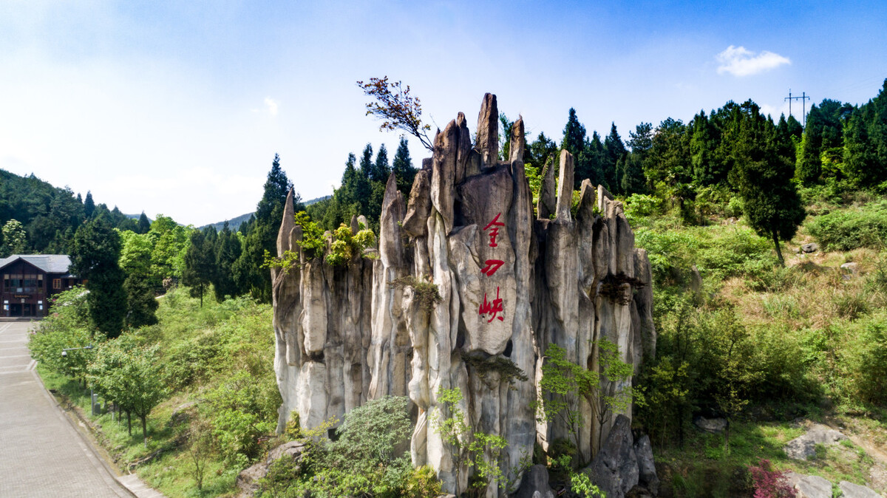
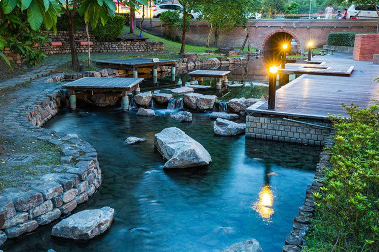
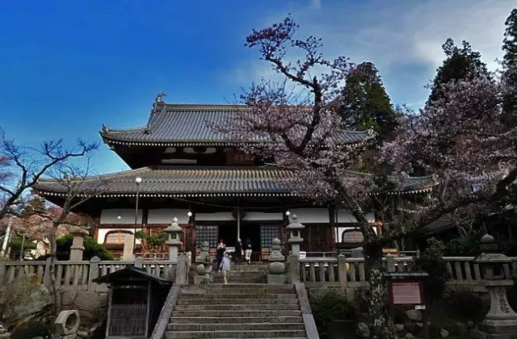

绿水青山 就是金山银山
北碚区
隶属重庆市，地处四川盆地东部川东平行岭谷，
位于重庆主城西北方向，是重庆两江新区的重要组成部
分，还是重庆主城九区之一；属东南亚季风环流控制的
亚热带湿润气候。辖9个街道、8个镇，总面积755平方
千米。根据第七次人口普查数据，截至2020年11月1日
零时，北碚区常住人口834887人。将协助推动成渝地
区双城经济圈建设。
北碚区距重庆江北国际机场27公里，嘉陵江黄金
水道纵贯南北，襄渝、遂渝、兰渝等铁路横穿东西，绕
城高速、渝武高速、渝广高速、中环快速路和重庆轨道
交通6号线穿境而过；境内有缙云山、北温泉、金刀
峡、重庆自然博物馆4个AAAA级景区；有西南大学、
中科院重庆绿色智能技术研究院等高等院校3所；有卢
作孚纪念馆、四世同堂纪念馆，梁实秋、晏阳初旧居，
张自忠烈士陵园，复旦大学、西部科学院旧址等人文景
观和抗战遗址104处
|  | 庆金刀峡位于重庆市北碚区金刀峡镇，在华蓥山西南麓。距重庆市中心90公里，海拔900米，距北碚城区62公里。金刀峡地势雄伟，以峡著险、以林见秀、以岩称奇、以水显幽。 重庆金刀峡是一处新进发现的保持着原始风貌的神奇峡谷。以上亿年的峡谷幽壑景观为主;以岩溶景观为辅;兼有大量地质上称作壶穴的碧玉串珠的深潭绝景。 |
|  | 重庆北温泉景区位于重庆市北碚区，北濒嘉陵江，南倚缙云山。其前身为温泉寺，初建于南朝刘宋景平元年(423年)，重建于明宣德七年(1432年)。1927年，卢作孚于此创办嘉陵江温泉公园，增建温泉游泳池与浴室、餐厅等旅游设施，后更名为重庆北温泉公园。 |
|  | 重庆温泉寺为文化旅游景点。温泉寺古为缙云寺下院，庙宇辉煌，石雕甚众，寺内香火兴旺。后经北周武帝和唐武宗两度灭佛，毁坏严重，唐贞宗时期重建庙宇并在后山岩间刻摩崖佛像。北宋景德四年(1007年)，温 |